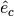
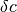
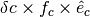
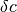
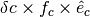

UnitSphericalRepresentation¶
-
class
astropy.coordinates.UnitSphericalRepresentation(lon, lat, differentials=None, copy=True)[source] [edit on github]¶ Bases:
astropy.coordinates.BaseRepresentationRepresentation of points on a unit sphere.
Parameters: lon, lat :
Quantityor strdifferentials : dict,
BaseDifferential, optionalAny differential classes that should be associated with this representation. The input must either be a single
BaseDifferentialinstance (see_compatible_differentialsfor valid types), or a dictionary of of differential instances with keys set to a string representation of the SI unit with which the differential (derivative) is taken. For example, for a velocity differential on a positional representation, the key would be's'for seconds, indicating that the derivative is a time derivative.copy : bool, optional
If
True(default), arrays will be copied rather than referenced.Attributes Summary
attr_classeslatThe latitude of the point(s). lonThe longitude of the point(s). recommended_unitsMethods Summary
cross(other)Cross product of two representations. from_cartesian(cart)Converts 3D rectangular cartesian coordinates to spherical polar coordinates. mean(*args, **kwargs)Vector mean. norm()Vector norm. represent_as(other_class[, differential_class])Convert coordinates to another representation. scale_factors([omit_coslat])Scale factors for each component’s direction. sum(*args, **kwargs)Vector sum. to_cartesian()Converts spherical polar coordinates to 3D rectangular cartesian coordinates. unit_vectors()Cartesian unit vectors in the direction of each component. Attributes Documentation
-
attr_classes= OrderedDict([('lon', <class 'astropy.coordinates.angles.Longitude'>), ('lat', <class 'astropy.coordinates.angles.Latitude'>)])¶
-
lat¶ The latitude of the point(s).
-
lon¶ The longitude of the point(s).
-
recommended_units= {'lat': Unit("deg"), 'lon': Unit("deg")}¶
Methods Documentation
-
cross(other)[source] [edit on github]¶ Cross product of two representations.
The calculation is done by converting both
selfandothertoCartesianRepresentation, and converting the result back toSphericalRepresentation.Parameters: other : representation
The representation to take the cross product with.
Returns: cross_product :
SphericalRepresentationWith vectors perpendicular to both
selfandother.
-
classmethod
from_cartesian(cart)[source] [edit on github]¶ Converts 3D rectangular cartesian coordinates to spherical polar coordinates.
-
mean(*args, **kwargs)[source] [edit on github]¶ Vector mean.
The representation is converted to cartesian, the means of the x, y, and z components are calculated, and the result is converted to a
SphericalRepresentation.Refer to
meanfor full documentation of the arguments, noting thataxisis the entry in theshapeof the representation, and that theoutargument cannot be used.
-
norm()[source] [edit on github]¶ Vector norm.
The norm is the standard Frobenius norm, i.e., the square root of the sum of the squares of all components with non-angular units, which is always unity for vectors on the unit sphere.
Returns: norm :
QuantityDimensionless ones, with the same shape as the representation.
-
represent_as(other_class, differential_class=None)[source] [edit on github]¶ Convert coordinates to another representation.
If the instance is of the requested class, it is returned unmodified. By default, conversion is done via cartesian coordinates.
Parameters: other_class :
BaseRepresentationsubclassThe type of representation to turn the coordinates into.
differential_class : dict of
BaseDifferential, optionalClasses in which the differentials should be represented. Can be a single class if only a single differential is attached, otherwise it should be a
dictkeyed by the same keys as the differentials.
-
scale_factors(omit_coslat=False)[source] [edit on github]¶ Scale factors for each component’s direction.
Given unit vectors  and scale factors
 ,
a change in one component of  corresponds to a change
in representation of .
,
a change in one component of  corresponds to a change
in representation of .Returns: scale_factors : dict of
QuantityThe keys are the component names.
-
sum(*args, **kwargs)[source] [edit on github]¶ Vector sum.
The representation is converted to cartesian, the sums of the x, y, and z components are calculated, and the result is converted to a
SphericalRepresentation.Refer to
sumfor full documentation of the arguments, noting thataxisis the entry in theshapeof the representation, and that theoutargument cannot be used.
-
to_cartesian()[source] [edit on github]¶ Converts spherical polar coordinates to 3D rectangular cartesian coordinates.
-
unit_vectors()[source] [edit on github]¶ Cartesian unit vectors in the direction of each component.
Given unit vectors and scale factors
,
a change in one component of corresponds to a change
in representation of .Returns: unit_vectors : dict of
CartesianRepresentationThe keys are the component names.
-